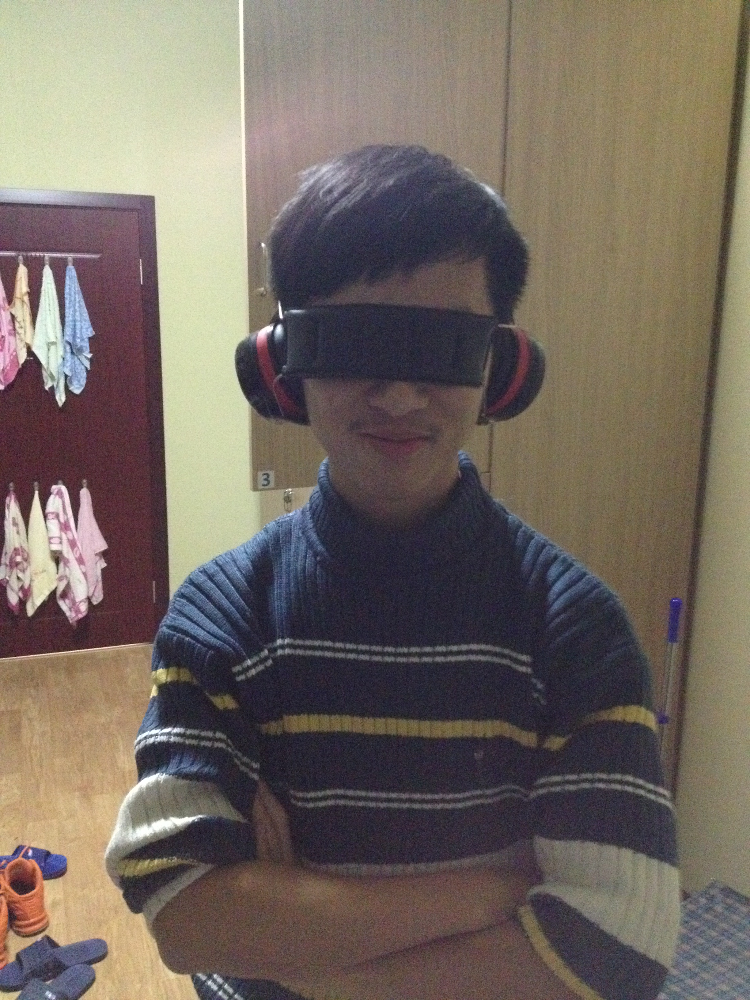

M.S.E. Student (Signal Processing)
School of Electronic Science and Engineering 电子科学与工程学院 |

|
I am currently a Master of Science in Engineering student studying in the School of Electronic Science and Engineering, Nanjing University, China. My current research interest lies in Signal Estimation and Detection, Radar Signal Processing and Deep Learning.